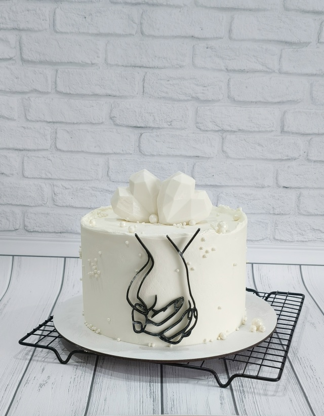

Для праздника.
И просто
без повода
Торты на заказ от Марины.
Ваш любимый вкус, ваше оформление —
и маленький повод собраться вместе.
1 800–2 000 ₽/кг · от 1,5 кг
Декор и доставка рассчитываются отдельно.

Сначала —
любимый вкус
Сливочный, шоколадный или с ягодной кислинкой.
Вот несколько сочетаний из моих работ.
Цена торта — 1 800–2 000 ₽/кг в зависимости от вкуса. Точную стоимость выбранной начинки и декора уточняйте при заказе.
Вкусный праздник.
Понятная цена
Стоимость складывается из веса и выбранной начинки. Оформление и доставка обсуждаются отдельно.
- Упаковка уже включена
- Вес торта считается без декора
- Перевес свыше 200 г не входит в базовую стоимость
Прикинем бюджет?
Базовая стоимость
Ориентир по цене из группы, без декора, доставки и доплаты за перевес. Итог согласовывается с Мариной.
Обсудить мой вариант ↗Меня зовут
Марина
Пеку торты для ваших праздников
уже более пяти лет.
Предложу варианты начинок и дизайна, учту ваши пожелания. Для дня рождения, свадьбы, корпоратива или просто чаепития в кругу семьи.
В кремах использую натуральные сливки 33 %. Можно выбрать торт без готового декора и украсить его самостоятельно.
Почему торт лучше заказать заранее ↗После последнего
кусочка
«Наш тортик! Был просто божественный!!!👍👍👍👍спасибо Марине!»
«Наш тортик!!!! Очень вкусный!!! Рекомендуем 👍»
Дословные отзывы из комментариев группы. Оба отзыва — от одного покупателя.
Рядом с вами.
К вашему дню
Мурино · Бугры
Доставка по Санкт-Петербургу
В группе указан адрес: Бугры, Тихая улица, 7к4.
Возможны самовывоз и доставка.
Время получения, точку выдачи и стоимость доставки нужно согласовать с Мариной. Свободную дату подтверждает кондитер.
Посмотреть адрес на карте ↗До заказа
За сколько дней заказывать?
«Лучше заранее, минимум за неделю 🤗но если дата свободна, беру срочные заказы» — ответ Марины в группе.
Какие есть начинки?
Ванильно-ягодный, Сникерс, Медовик, Маковый, Молочная девочка, Красный бархат, Чёрный лес, Прага, Ферреро, Баунти и Морковный — из опубликованного ассортимента. Другие пожелания можно обсудить.
Декор входит в цену?
Декор оплачивается отдельно. Упаковка включена, вес считается без декора. Базовая цена — 1 800–2 000 ₽/кг в зависимости от вкуса.
Корона на торте съедобная?
В комментариях есть такой вопрос, но опубликованного ответа нет. Материал конкретного украшения уточните у Марины при заказе.
Какой праздник
у вас впереди?
Выберите дату и расскажите о торте.
Покажем, как может выглядеть заявка.
Это демонстрация: данные не сохраняются и не отправляются. Для настоящего заказа свяжитесь с Мариной в группе.
Открыть группу Марины ↗